Our Recipes
40 recipes · Last updated Oct 21, 2026
🕐 Recently Added
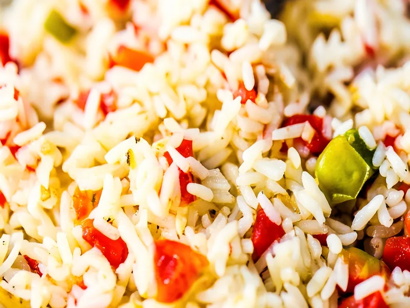
Orville's Spanish Rice
A boldly seasoned, golden-toasted rice simmered with zesty Ro-Tel tomatoes, cumin, and chili powder — a simple, satisfying Tex-Mex classic that pairs with almost anything.

Orville's Enchiladas
Tender corn tortillas stuffed with savory meat and melted Monterey Jack, blanketed in rich chili con queso and baked until golden and bubbling.
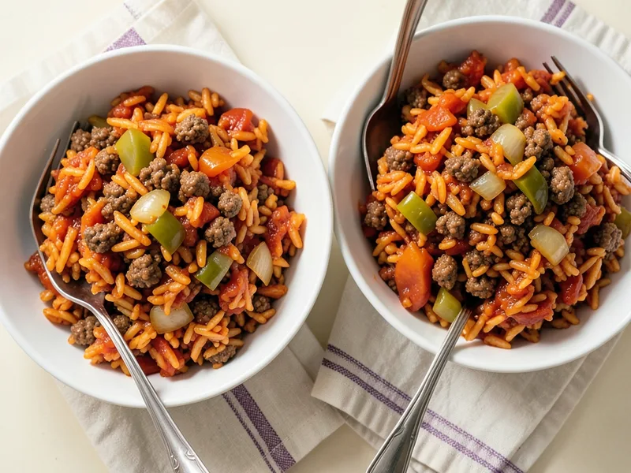
Spanish Rice
A hearty one-dish meal of seasoned ground beef, tender rice, and vegetables simmered in a rich tomato sauce with a gentle chili kick. Simple to make and deeply satisfying.
🍢 Appetizers 5 recipes
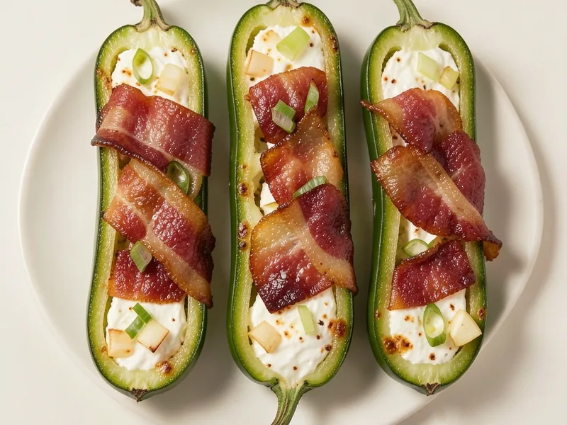
Bacon-Apple-Jalapeño Pop 'Ems
Crispy bacon-wrapped jalapeño halves stuffed with a creamy apple-scallion filling — the ultimate crowd-pleasing party bite that balances heat, tang, and smoky richness in every pop.
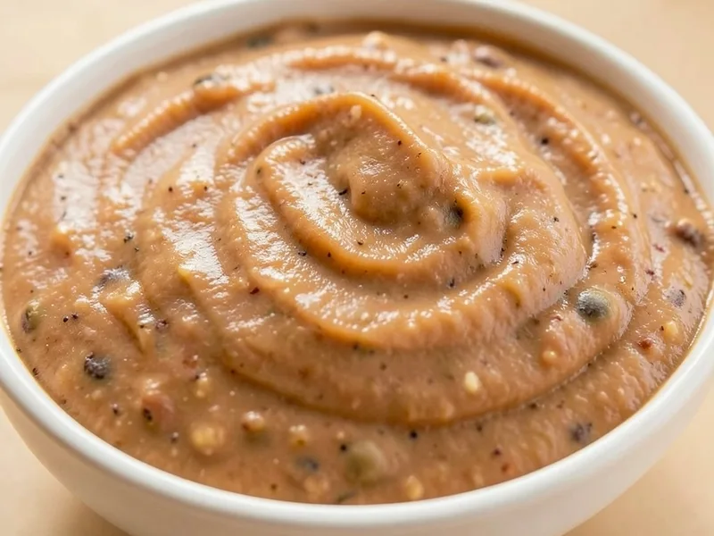
Championship Bean Dip
A rich, cheesy slow-cooker bean dip loaded with refried beans, two melted cheeses, and a kick of chili spice — the ultimate crowd-pleasing party appetizer.
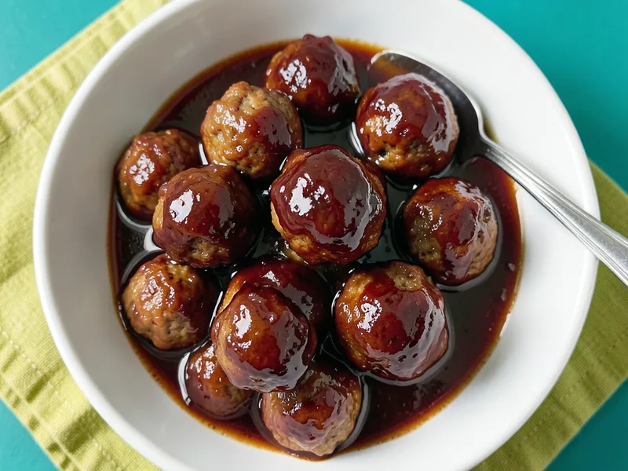
Glazed Meatballs
Tender meatballs simmered in a sweet-and-tangy chili-grape glaze that caramelizes into an irresistible sticky coating. A beloved party classic that comes together with just three ingredients.
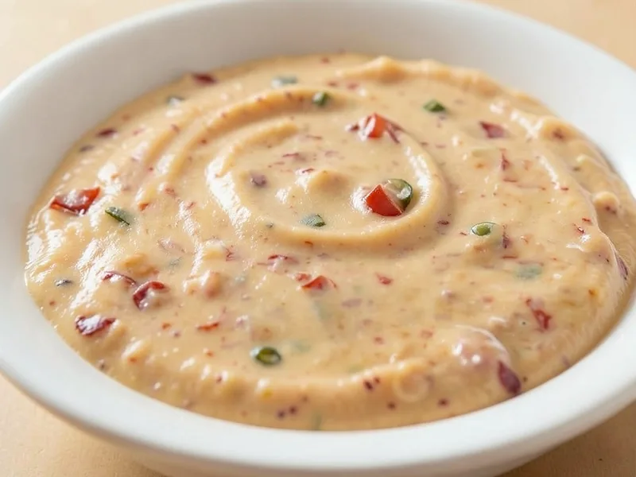
Rotel Tomato Cheese Dip
The ultimate two-ingredient queso dip — creamy, velvety Velveeta melted together with zesty Ro-Tel tomatoes and green chiles for a crowd-pleasing snack that comes together in minutes.
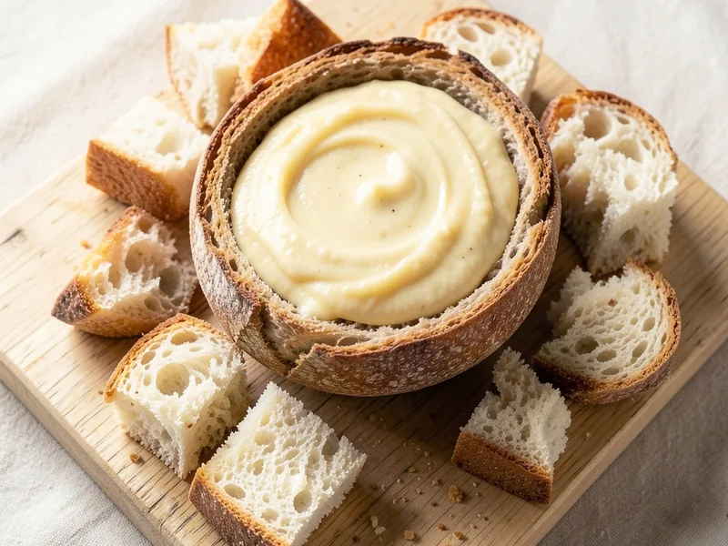
Uncle Larry's Cheese Bread Beer Dip
A crowd-pleasing party classic featuring a creamy, beer-spiked cheese dip poured into a hollowed-out rye bread bowl, surrounded by chunks of soft bread for dipping.
🍳 Breakfast 3 recipes
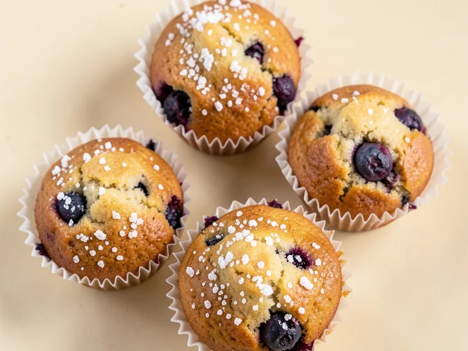
Blueberry Muffins
Tender, sweet, and loaded with juicy berries. Topped with sparkly coarse sugar for that bakery-window magic.
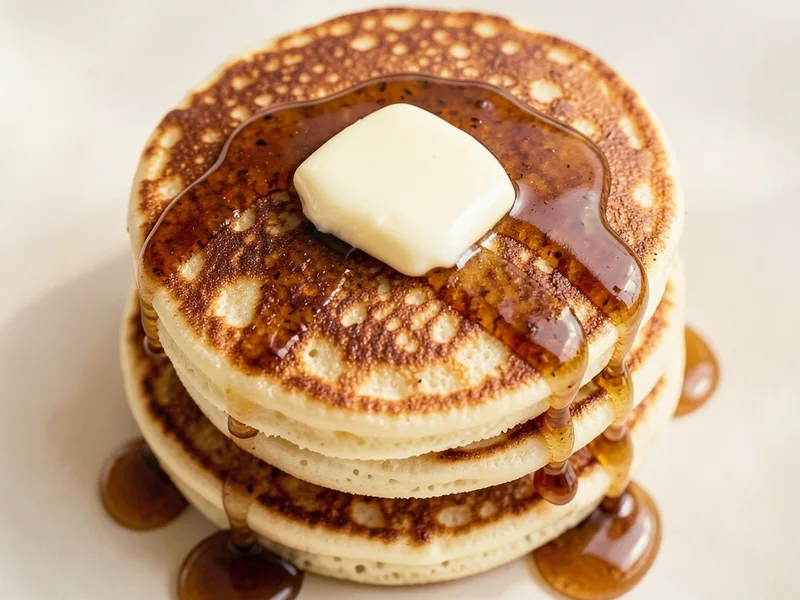
Buttermilk Pancakes
Light, fluffy, and ridiculously easy. The kind of pancakes that make weekday mornings feel like a lazy Sunday.
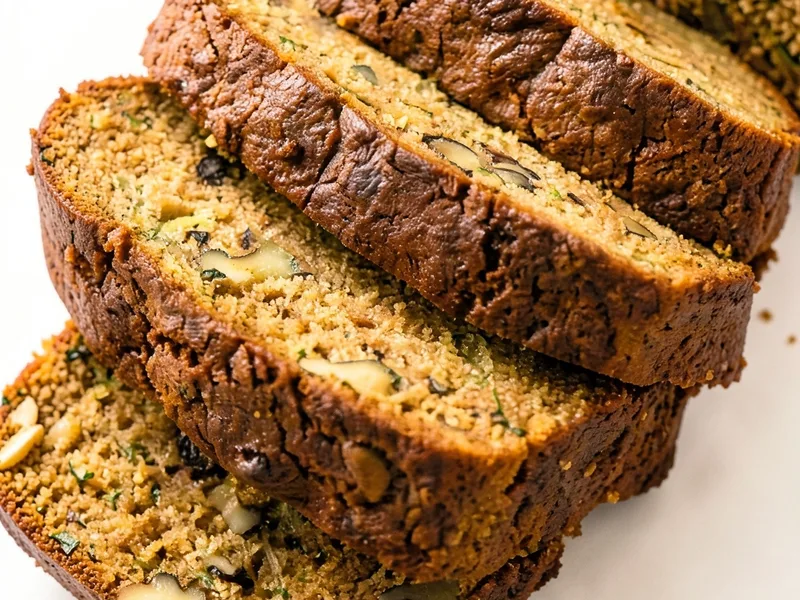
Linda's Zucchini Bread
A warmly spiced, impossibly moist quick bread packed with fresh zucchini and toasted nuts — the kind of heirloom recipe that disappears from the counter before it has a chance to cool.
🍰 Desserts 6 recipes
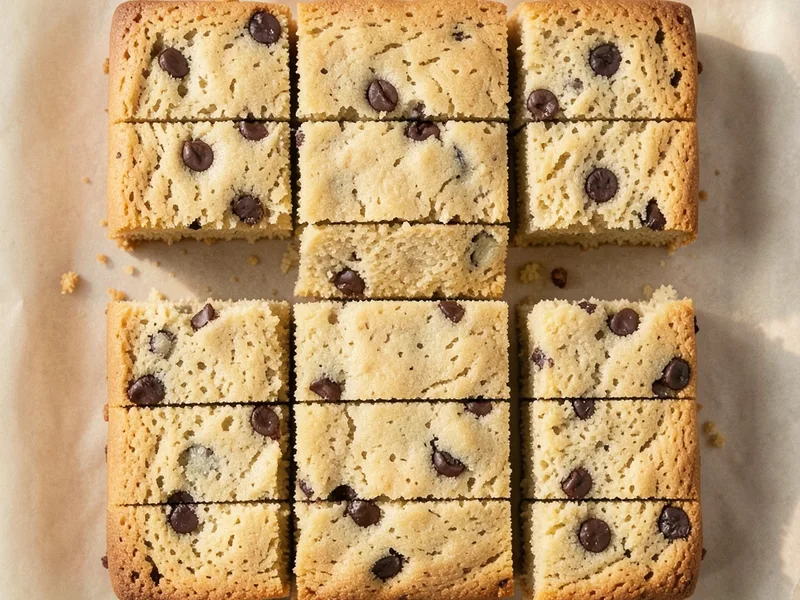
Banana Chocolate Chip Bars
Banana bread's snackable cousin: soft, sweet, and loaded with chocolate chips in every bite.
Basic Vanilla Pudding
Creamy, old-fashioned stovetop pudding made from scratch. Top it however you like.
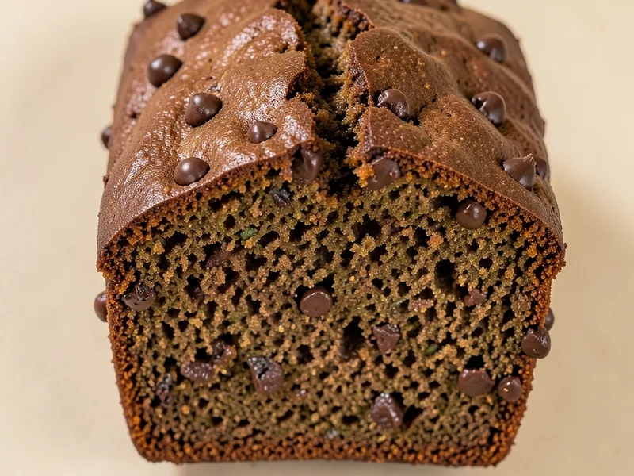
Chocolate Zucchini Bread
Moist, fudgy double chocolate bread hiding a whole zucchini in every loaf. No one will believe there's a vegetable in this.
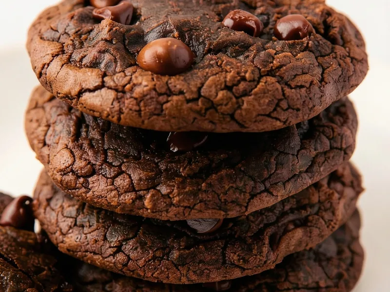
Double Chocolate Cookies
Rich, fudgy cookies loaded with semisweet chips and dark chocolate chunks. A hit of espresso makes the chocolate sing.
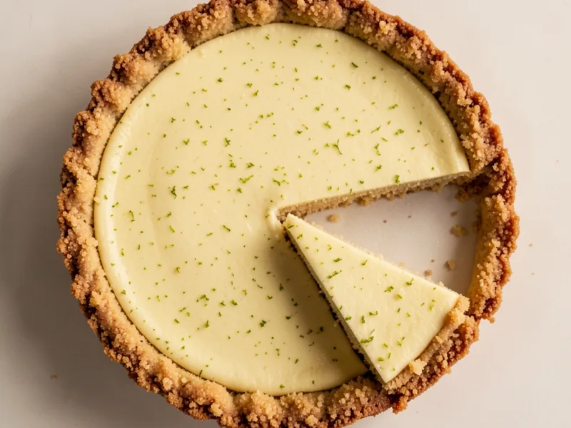
Key Lime Pie
Tangy, creamy, and almost too easy — a no-fuss custard pie that tastes like a tropical getaway in a graham crust.
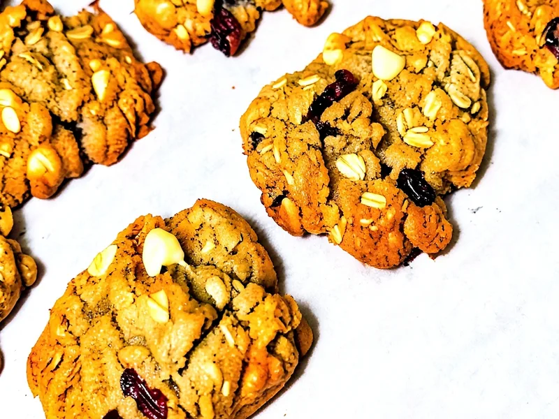
White Chocolate Cranberry Oatmeal Cookies
Chewy, hearty oatmeal cookies loaded with sweet white chocolate chips and tangy dried cranberries, warmly spiced with cinnamon and kissed with vanilla.
🍽️ Main Dishes 15 recipes
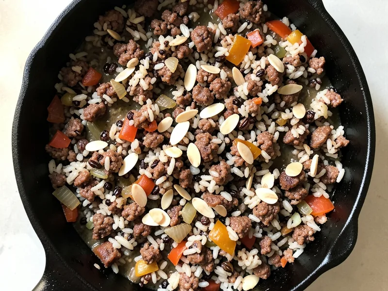
Almond Delight
A hearty, savory casserole of browned breakfast sausage, wild rice, and toasted slivered almonds baked together with vegetables and chicken noodle soup mix for incredible depth of flavor. Cozy, crowd-pleasing, and surprisingly elegant.
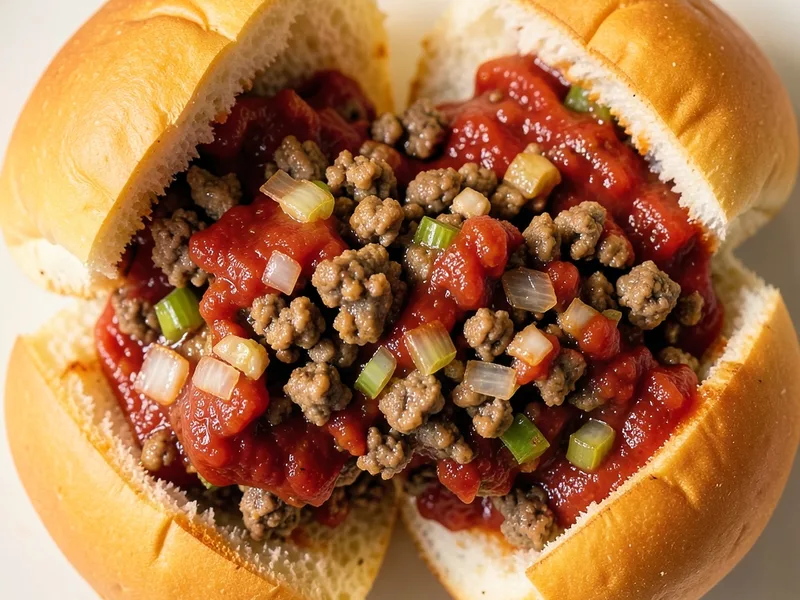
Barbecue (Ice Cream Social)
A Midwestern church-cookbook sloppy joe — tangy tomato soup, ketchup, onion, celery, and a splash of Worcestershire.
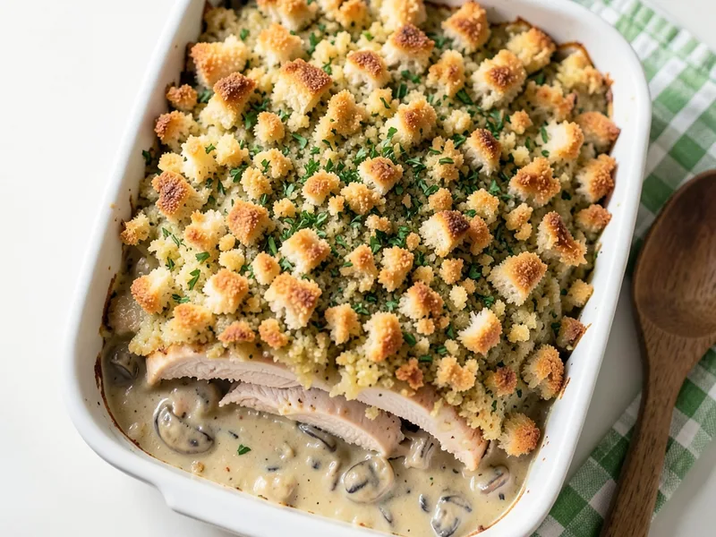
Chicken Breast Casserole
A comforting, weeknight-friendly casserole layered with tender chicken breasts, creamy mushroom sauce, and a golden, herb-seasoned stuffing crust that bakes up perfectly in under an hour.
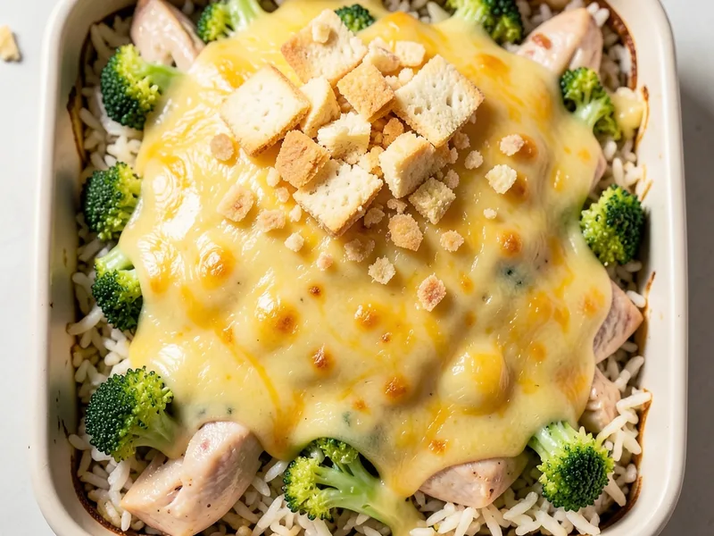
Chicken Broccoli Rice Casserole
Cheesy one-pot comfort with tender chicken, broccoli, and rice, all topped with a buttery Ritz cracker crunch.
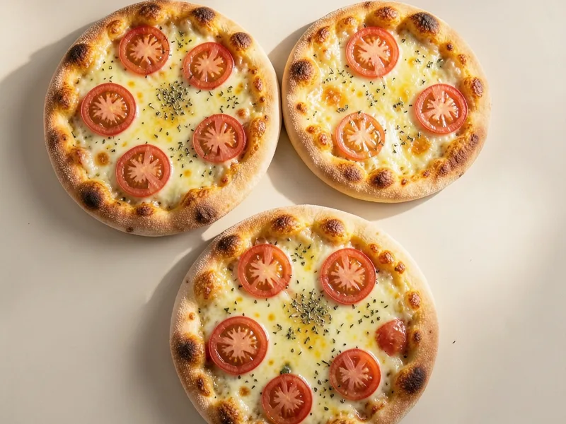
French Boulangerie-Style Pizza
Crème fraîche stands in for tomato sauce, Gruyère melts into a soft focaccia-like crust — the kind of pizza you'd grab from a French neighborhood bakery.
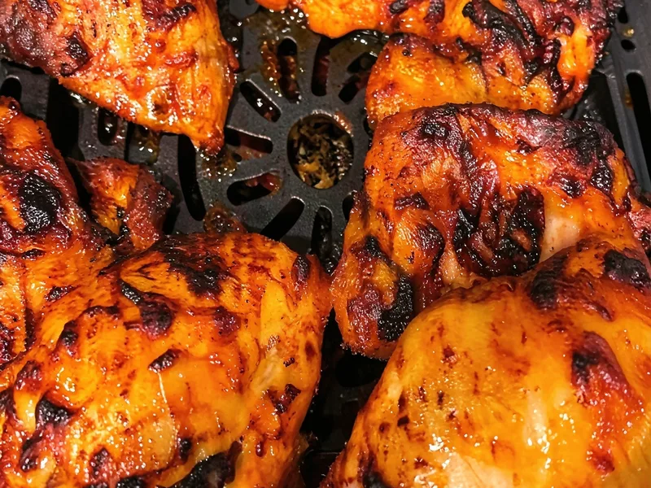
Gochujang Chicken
Crispy air fryer chicken thighs with a sweet-spicy gochujang glaze that caramelizes into something dangerously good.
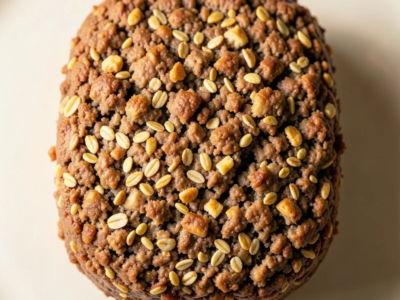
Kathy's Meatloaf
Old-school comfort meatloaf held together with oatmeal, crushed saltines, and a packet of onion soup mix.
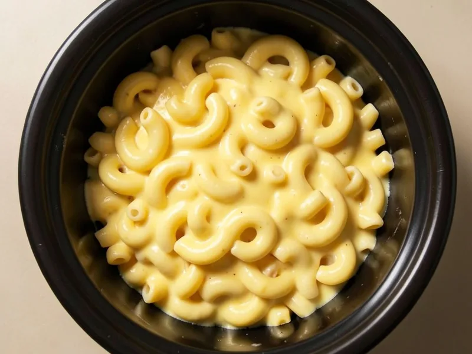
Mac & Cheese Crockpot Magic
Creamy, three-cheese comfort straight from the slow cooker — tender pasta and melted cheese with almost zero fuss.
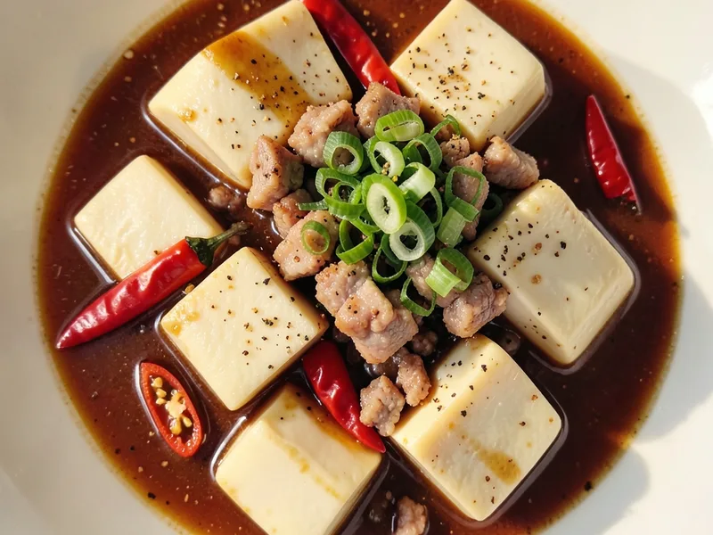
Mapo Tofu
The real-deal Sichuan classic — spicy, tongue-numbing, and absolutely not optional without rice.
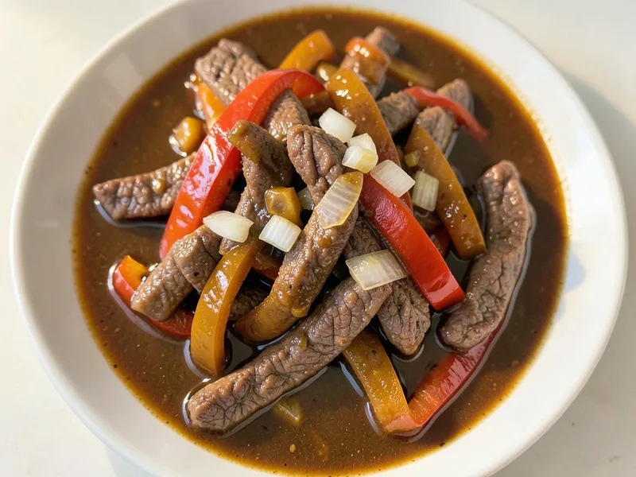
Maria's Pepper Steak
A sweet and savory stir-fry with tender flank steak, bell peppers, and a honey-soy glaze that's hard to mess up.
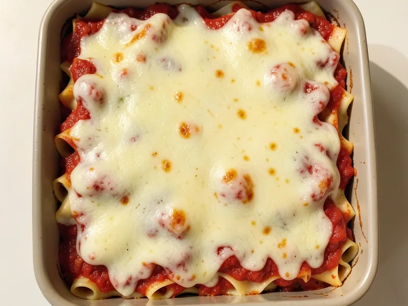
Mom's Lasagna
A hearty, comforting classic layered with tender noodles, creamy cottage cheese, rich tomato sauce, and melted mozzarella — just like Grandma used to make.
Orville's Enchiladas
Tender corn tortillas stuffed with savory meat and melted Monterey Jack, blanketed in rich chili con queso and baked until golden and bubbling.
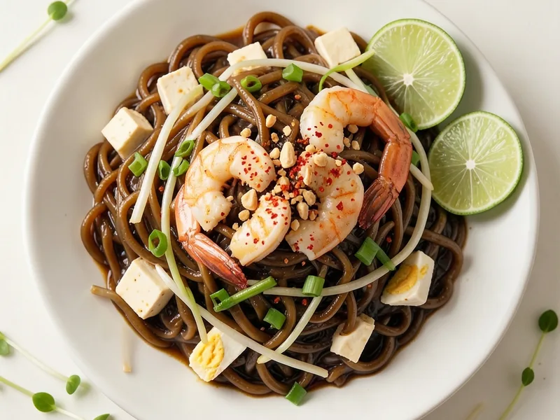
Pailin's Authentic Pad Thai
The real-deal Thai street food classic with tamarind, palm sugar, and all the proper bits.
Spanish Rice
A hearty one-dish meal of seasoned ground beef, tender rice, and vegetables simmered in a rich tomato sauce with a gentle chili kick. Simple to make and deeply satisfying.
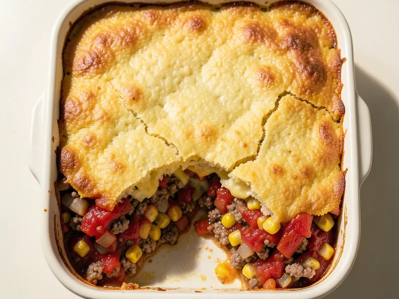
Speedy Taco Bake
A beefy, cheesy taco casserole with a Bisquick crust that bakes up golden in 35 minutes.
🫙 Sauces and Dressings 1 recipe
🥘 Side Dishes 2 recipes

Mom's BBQ Beans
A sweet and smoky baked bean casserole with a rich, caramelized glaze that's the perfect crowd-pleasing side dish for any cookout or family gathering.
Orville's Spanish Rice
A boldly seasoned, golden-toasted rice simmered with zesty Ro-Tel tomatoes, cumin, and chili powder — a simple, satisfying Tex-Mex classic that pairs with almost anything.
🍲 Soups and Stews 6 recipes
Delicious Ham and Potato Soup
A cozy, creamy comfort bowl that comes together in under an hour.
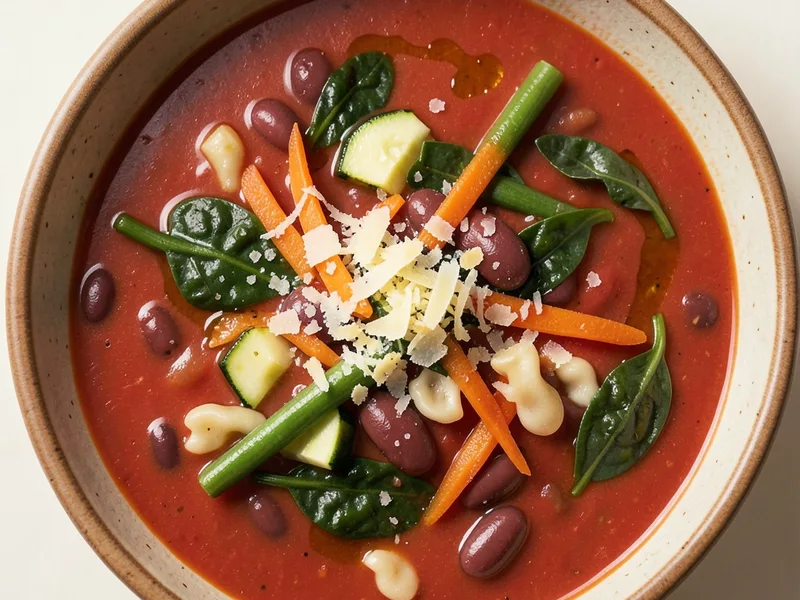
Jamie's Minestrone Soup
A hearty, vegetable-loaded Italian soup that gets better the longer it simmers.
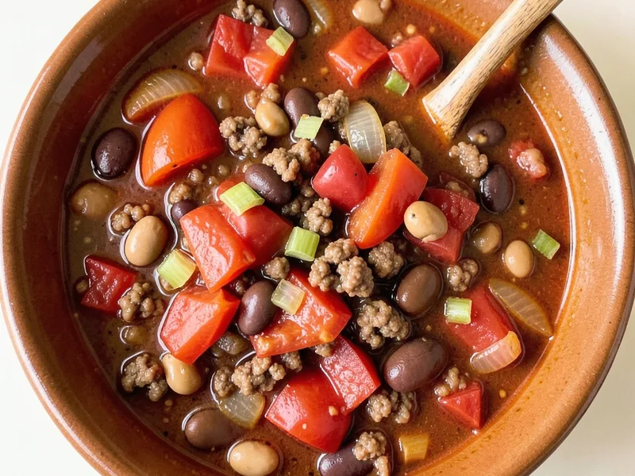
LaBonte Chili
A no-fuss family chili with two kinds of kidney beans and a kick from Lipton onion soup mix.
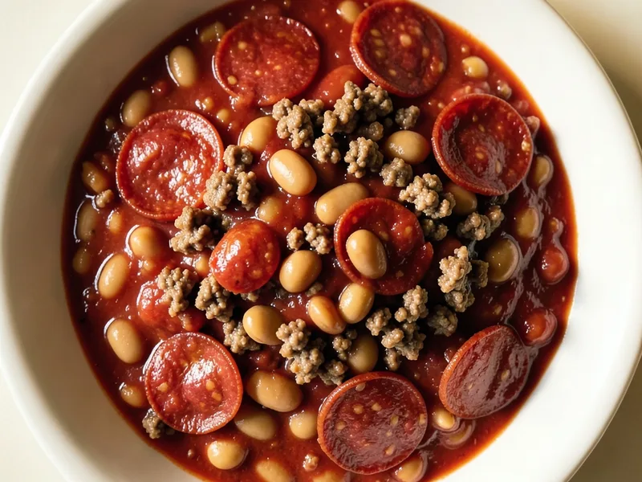
Mom's Chili
A hearty, slow-cooked family chili packed with kidney beans, savory ground beef, and zesty pepperoni that deepens in flavor the longer it simmers.
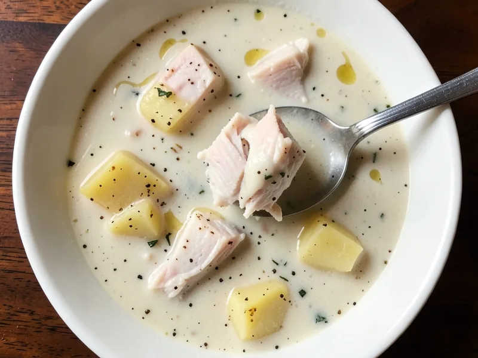
Nana's Fish Chowder
A soul-warming, old-fashioned New England-style fish chowder with tender cod, buttery potatoes, and a rich, creamy milk broth — simple comfort food at its finest.
Quick and Easy Chicken Noodle Soup
A simple, comforting shortcut soup for when you don't have time to make it from scratch.
No recipes found